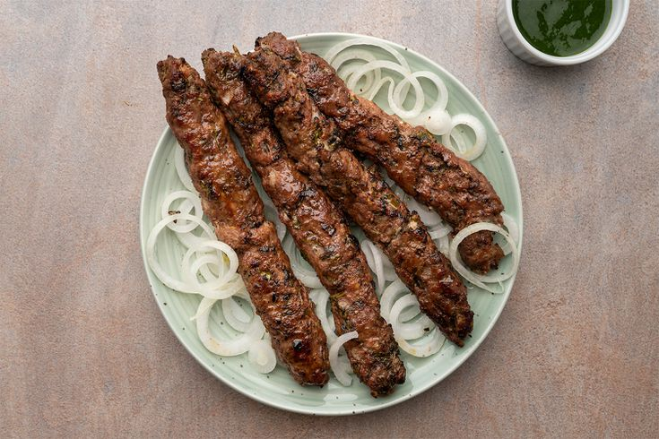

Seekh Kabab

Any party is incomplete without some delicious appetizers to kick start with and there would
be no better option than some hot, grilled or roasted seekh kebabs. Kebabs made from minced
mutton and chicken meat, slathered in a bowl of spices and grilled to perfection. Full of
juice and flavor, these kebabs are perfect as a starter for an amazing dinner party. Served
with mint chutney and a side of onion rings and lemon wedges, you won't need anything else
to start the party!
Ingredients
- 150 Gram mutton (keema, minced)
- 100 gram chicken (minced)
- 2 tsp ginger-garlic paste
- 1 tsp onion paste
- 1 tsp red chilli powder
- 1 tsp coriander powder
Steps
- In a bowl mix together the mutton mince and the chicken mince. Mix them with your hands.
- Add ginger-garlic paste to it along with onion paste, red chilli powder, coriander powder, cumin powder, powdered pepper, dried mango powder, saunth, oil, cashew paste and cream. Mix nicely.
- Add besan (chickpea flour) and egg yolk to bind. Mix well.
- Add salt to taste. Mix. Cover and keep in the fridge for 1 hour.
- Skewer the kebabs onto oiled skewers and grill or roast till the outside is nicely browned. Baste frequently with oil while grilling.
- Once the kebabs are cooked, remove to a serving platter and garnish with onion rings, fresh coriander leaves and lemon wedges.